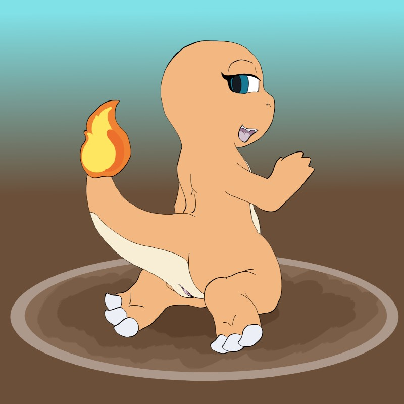
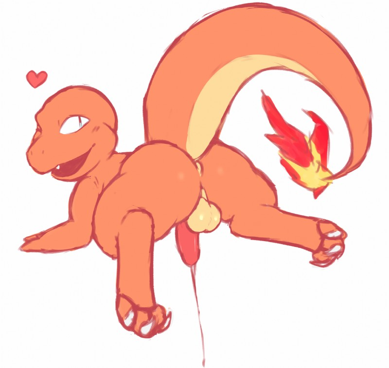
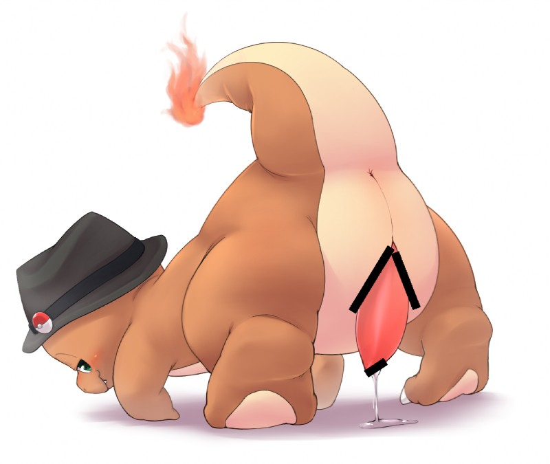

Charmander - #004
A male Charmander discovers its mate using its firey tail. It's tail flame will burn brighter than usual when it has taken great interest in what it considers to be a suitable mate. Charmander will approach its mate, often acting sweet and tending to stick close. This is it's attempt to make the chosen warm up and grow onto Charmander, accept it, and proceed to fornicate. During mating, Charmander tends to be slow and passionate and with the passion it's flame grows hotter and brighter. Once it releases it's seed into the mate it's flame will release a firey burst. When the mating has finished, Charmander will remain close to it's mate as both proceed to drift into sleep
Desc written by "V-sama#3552"
| dex number: | 004 |
| e621 popularity: | 1718 | dom/sub: | dom |
| size: | 2 |
|  |  |  | |
|---|---|---|---|
| arcing light | zackary911 | doneru | ビビリ |
Charmander e621